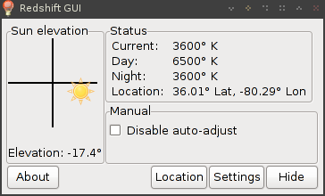
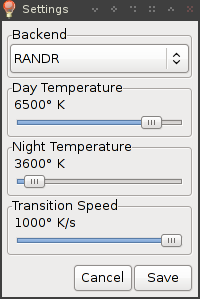
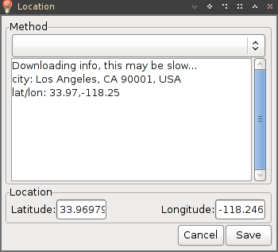

RedshiftGUI is a fork of the Redshift project by Jon Lund Steffensen. It was something I made because I wanted a GUI version of the program. The Redshift project itself is inspired by f.lux, and there's more information on the benefit of this program on their home page.


